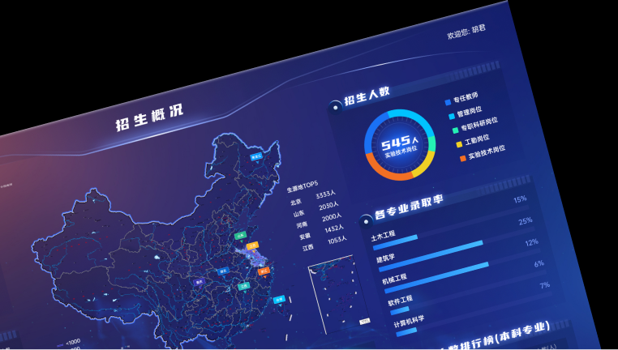
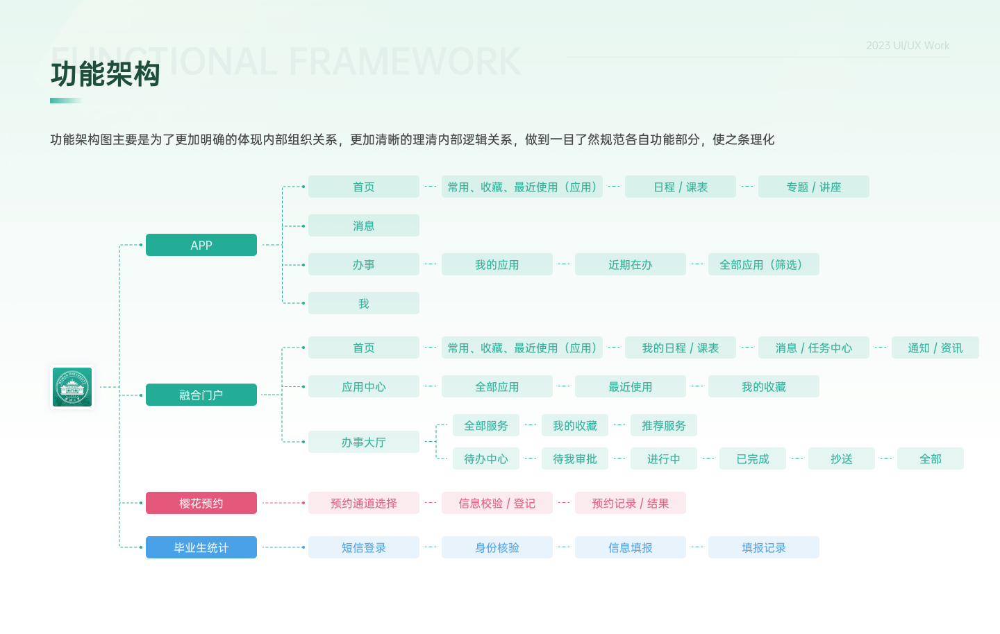
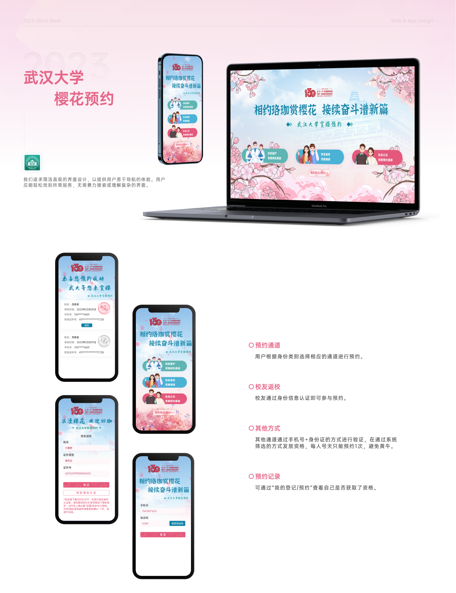

Wuhan
产品设计与 AI 原型实践
从 UI/UX 到产品方案落地
我关注从用户体验、业务目标到落地协作的完整链路，擅长把复杂需求转化为清晰的产品方案、交互原型和可执行文档。



作品
基于 2023 UI/UX 作品集重新整理公开案例，用图文方式呈现问题定义、设计判断、产品转译和结果沉淀。
文章
工具
公开展示常用工具和工作方式，帮助访客理解我的设计、产品、AI 与研发协作习惯。
Wuhan
从 UI/UX 到产品方案落地
我关注从用户体验、业务目标到落地协作的完整链路，擅长把复杂需求转化为清晰的产品方案、交互原型和可执行文档。



基于 2023 UI/UX 作品集重新整理公开案例，用图文方式呈现问题定义、设计判断、产品转译和结果沉淀。
公开展示常用工具和工作方式，帮助访客理解我的设计、产品、AI 与研发协作习惯。